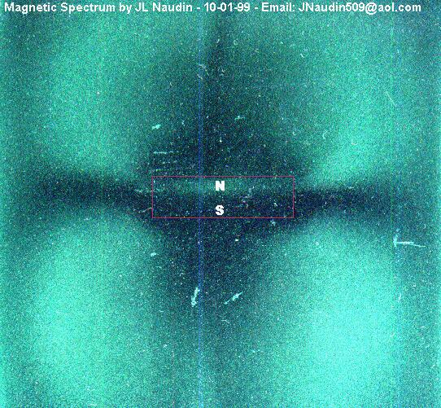
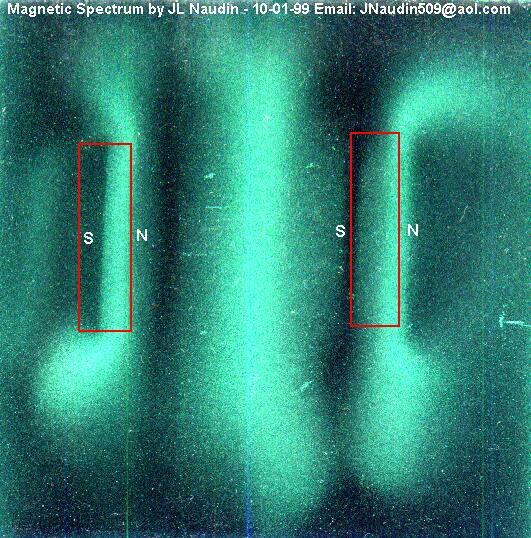
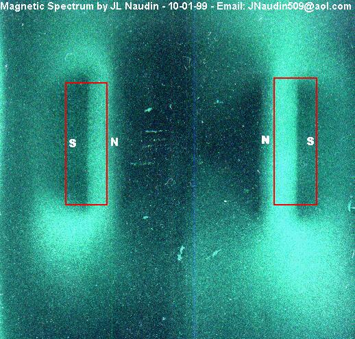
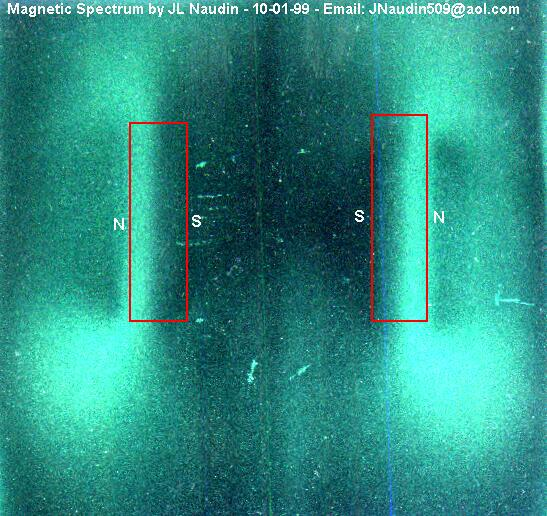

The Magnetic Spectrum pictures
By Jean-louis Naudin
created on October 01th, 1999 - JLN Labs - Last update October 18th, 1999
You will find below some magnetic spectrum pictures of rectangular magnets in different configurations. I have used a Magnetic Imager film ( Magnaview ). This kind of film can be found at : http://www.wondermagnet.com/dev/magnet38.html

A common rectangular ferrite magnet

Two magnets in attraction

Two magnets in repulsion North/North

Two magnets in repulsion South/South
I shall soon post some interesting magnetic spectrum pictures...
 Mail to JNaudin509@aol.com
Mail to JNaudin509@aol.com
Return to B-Field Torsion home page